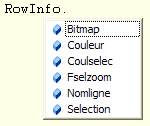

Vous pouvez afficher la liste des membres disponibles (fonction du contexte d'appel et de la position où se situe le curseur clavier dans le code source) dans une liste déroulante. Après sélection d'un membre de la liste, vous pouvez l'insérer directement dans votre code.
Par exemple :

Afficher la liste des membres
Appel automatique :
Dans certains cas particuliers, la liste des membres s'ouvre de manière automatique.
Par exemple, la frappe d'un point (".") derrière un nom de table ou un nom de module affiche la liste des champs de cette table ou la liste des procédures et fonctions de ce module.
Appel manuel :
Lorsque le contexte d'appel et la position du curseur clavier dans le source le permettent, les touches Ctrl+J et Ctrl+Espace (ou Alt+Flèche Droite) ouvrent explicitement la liste des membres disponibles.
Ces commandes sont également accessibles depuis le menu Edition : Saisie assistée ou depuis le sous-menu Saisie assistée du menu contextuel ouvert par un clic droit dans la zone d'édition de texte (choix Liste des membres et Compléter le mot).
Ctrl+J ouvre systématiquement la liste des membres.
Si le curseur est placé sur une chaîne de caractères, la liste présente tous les membres dont le nom contient cette chaîne de caractères.
Dans l'exemple ci-dessus (champs de la table RowInfo), si vous tapez "sel" puis Ctrl+J, la liste affichera les champs CoulSelec, Fselzoom et Selection.
Si le curseur est placé sur une chaîne de caractères qui correspond au début du nom d'un membre et si aucune ambiguïté ne subsiste, Ctrl+Espace complète automatiquement la chaîne déjà saisie.
Dans ce cas, la liste n'est pas ouverte et vous faites appel à la fonctionnalité Compléter le mot.
Dans l'exemple ci-dessus (champs de la table RowInfo), si vous tapez "no" puis Ctrl+Espace, l'éditeur remplace immédiatement "no" par "Nomligne".
Si aucune ou plusieurs correspondances existent encore, la liste est ouverte, comme après la frappe de Ctrl+J.
Exemple de corrélation avec le contexte d'appel.
Derrière un nom de dictionnaire de donnée (.dhsd) ou de RecordSql (.dhoq), ces fonctions considèrent différents types de membre, selon le contexte courant :
Liste des Fichiers dans une déclarative Hfile.
Liste des Tables dans une déclarative Record.
Liste des Champs derrière ">nom_dico.dhsd".
Liste des RecordSql dans une déclarative RecordSql.
Cas particuliers des sources de dictionnaire de RecordSql ou de Jointures Sql :
Voir la rubrique Assistance au codage dans un dictionnaire Sql.
Naviguer dans la Liste des membres
Vous pouvez naviguer dans cette liste en la faisant défiler (ascenseur ou molette) ou en utilisant les touches de direction (Flèche en Bas, Flèche en Haut, Page Up, Page Down, Ctrl+Page Up, Ctrl+Page Down).
La sélection dans la liste « suit » les caractères (déjà) tapés. Si vous connaissez les premières lettres du nom du membre, tapez-les pour atteindre directement le membre en question dans la liste.
Une fenêtre d'information rapide affiche des renseignements sur l'élément couramment sélectionné dans la liste des membres et sur les commentaires du code qui s'y rapporte (pour plus d'informations sur ce dernier point, consultez la rubrique Insertion de commentaires dans le code).
Insérer un membre de la liste dans le code source
Effectuez l'une des opérations suivantes :
Sélectionnez le membre (clic simple, ...) puis :
Tapez Tab ou Entrée pour insérer uniquement ce membre.
Tapez directement le caractère qui doit être inséré à la suite du membre (parenthèse ouvrante, virgule, espace, point, égal, etc.).
Double-cliquez sur le membre.
Sans membre sélectionné, appuyez sur Tab ou Ctrl+Entrée pour insérer l'élément qui a le focus.
Refermer la liste des membres
A tout moment, appuyez sur Echap ou cliquez dans l'éditeur.
Désactiver la liste des membres
Décochez la case "Afficher la liste des membres" dans les options de l'éditeur de texte (volet Saisie assistée). Pour plus d'informations, consultez la rubrique Modification des options et désactivation des fonctions d'assistance au codage.
Assistance au codage dans un dictionnaire Sql
Pour afficher la liste des membres